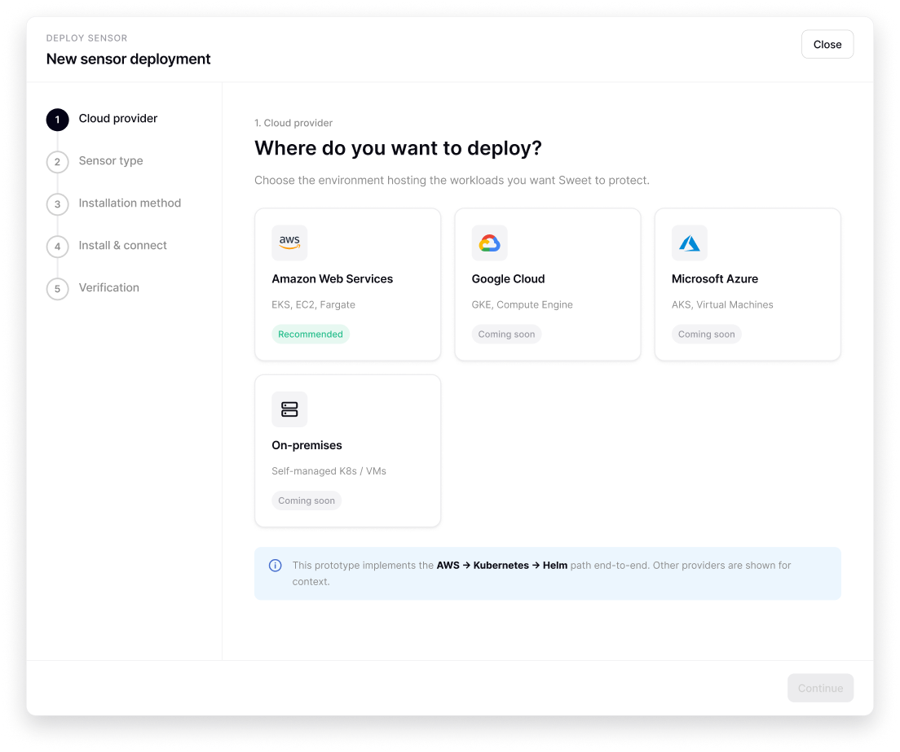
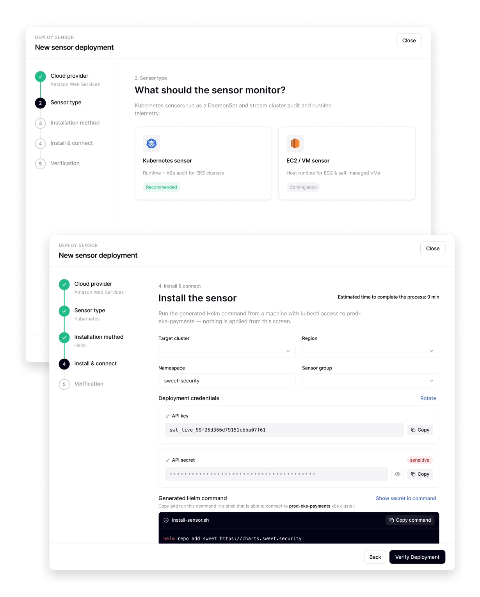
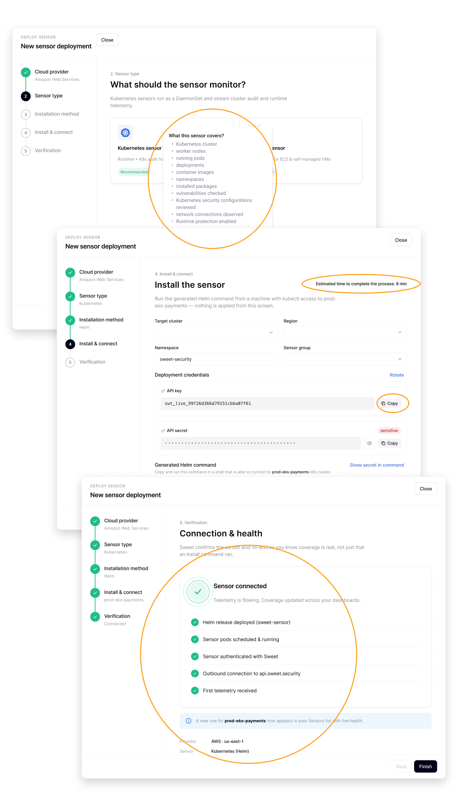
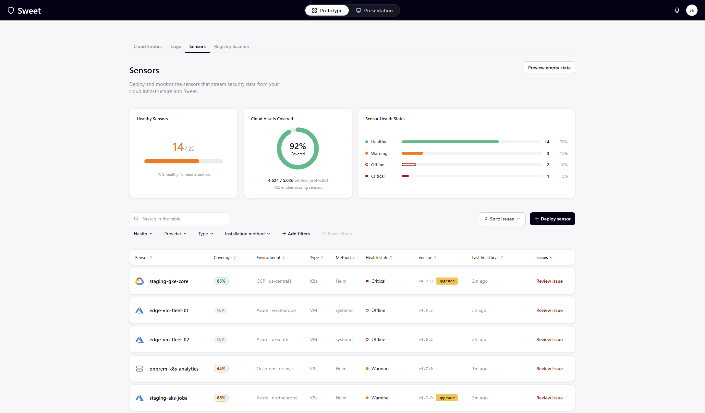
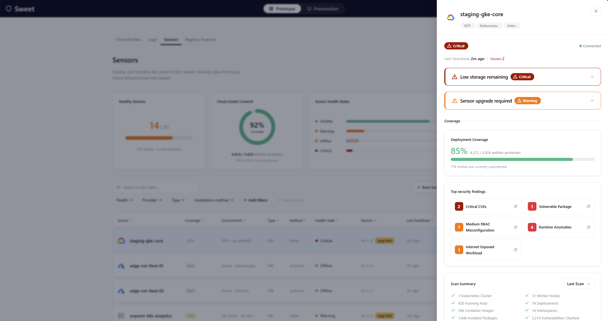
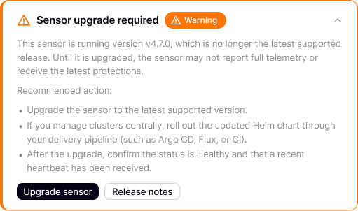

Product design case study · Cloud security
Sensor Deployment Flow
Redesigning how security teams deploy sensors — and trust that their environment is actually protected.
01The starting point
Deployment is the first thing users do — and the easiest place to lose them.
The problem
Before a platform detects a single threat, someone has to deploy sensors across their infrastructure. When that first step is confusing, customers stall before they ever reach the value they came for.
Who I designed for
A SOC analyst or DevOps engineer — technical enough to run a deployment, but not an expert in this specific product. They move between many security tools and lean on familiar patterns.
02What I assumed
Design starts with a point of view. Here's mine.
- 1Users don't know this UI — it has to guide them, not test them.
- 2They need confidence that everything installed correctly.
- 3They want to understand exactly what protection they're getting.
- 4When something breaks, they need immediate clarity on what happened and how to fix it.
03The deployment flow
Five steps. One decision at a time.
A stepped wizard instead of one dense page. A persistent rail shows progress and the choices already made — the flow remembers the context, not the user.

Reduce friction at every step.
What am I deploying?
Visual provider cards — recognition, not recall.
One decision at a time
A single choice per step; the path stays obvious.
Never leave them wondering
"Installing…" becomes the real work, named.
Make it effortless
Copy-ready commands; failures in plain language.

Build confidence it actually worked.
Explain what's monitored
Contextual tooltips — deploy becomes an informed choice.
Set expectations
Show how long it takes. Uncertainty drives abandonment.
Verify — don't ask
Sweet checks the whole chain: release → pods → auth → connectivity → telemetry. Confirmed, not assumed.

04The Sensors page
Answer the questions teams actually ask.
Am I protected?
A coverage widget answers it before anything else.
Where are my blind spots?
The gap between expected and actual coverage, made visible.
Is anything broken?
Clear, specific health states — never a vague "status."
What do I fix first?
Issue, context and recommended action, together.

In five seconds, they should know where they stand.
- ✓Is the sensor healthy?
- ✓Is it protecting my environment?
- ✓Did it catch anything important?
- ✓Do I need to act?
Carried by four elements: health badge · coverage widget · security findings · issue banner.

05Key decisions
One "status" was hiding three different problems.
A generic status forces users to interpret. I realized a sensor actually has several distinct states: health — an inclusive state that accumulates its issues and their severity — plus connectivity, deployment state, and coverage level. Health is the most important parameter, so I gave it the highest hierarchy in the UI: it sits in the table on its own, to prevent ambiguity. The details pane holds all the other factors, but health always stays at the top of the hierarchy.
Offline state — I was genuinely conflicted about where to place "Offline." It's a connectivity state, but its severity led me to give it a place of honor as a health state: its criticality sits on a different level, even next to other critical issues. That was a UX decision grounded in one question — what matters most to the user?
Health
- Healthy
- Warning
- Critical
- Offline
Connection
- Connected
- Connecting
- Disconnected
Every problem should explain itself.

Four more calls that shaped the page.
03
Show value immediately
The moment install finishes, users see the sensor is already protecting them — and what's in scope.
04
Attention, impossible to miss
Active problems carry the most visual weight. Attention lands where it's needed.
05
Confidence through transparency
Last heartbeat, connectivity, collected entities, coverage — all in plain sight.
06
Designed for troubleshooting
Issues sort to the top; the Issues column and details panel lead with active problems.
06Trade-offs & challenges
What I chose, and what it cost.
Overview over density
I gave the overview more vertical space, even though it pushes the table down. Seeing what matters first beat a few extra rows above the fold.
Modal over full page
I initially started with a page layout, but the elements felt too spread out. A modal seemed better suited to the amount of content I needed to display. It also has the added benefit of keeping users in the context of the Sensors page.
The hardest part for me was deciding on the information hierarchy. I kept rearranging the order of the elements before finally settling on showing Issues first, followed by Coverage.
I also experimented with displaying a coverage summary and the total number of collected entities in the header. However, I felt it was redundant since the same information was already visible in the expanded details pane. In the end, I removed it because users can see the data without needing to scroll.
Another decision I debated was whether to split the details pane into two tabs — Issues and Coverage. Ultimately, I decided against it because there isn't enough content to justify separate tabs, and keeping everything together makes the information easier to discover.
07If I had more time
Where I'd take it next.
Historical coverage trends
A date selector and trend line. If telemetry stops, the break is obvious — and easy to correlate with a deployment change.
Interactive health distribution
Click any segment of the health widget to filter the sensors table instantly. The overview becomes a control, not just a chart.
08Key takeaways
How I think about design.
- 01
Guide people through complexity instead of exposing it.
- 02
Verify success — don't ask users to.
- 03
Build trust through transparency.
- 04
Every issue should explain itself and offer the next action.
- 05
Design for five-second decisions.
- 06
Reduce cognitive load by matching familiar mental models.
Thanks for reading. Explore the working prototype →